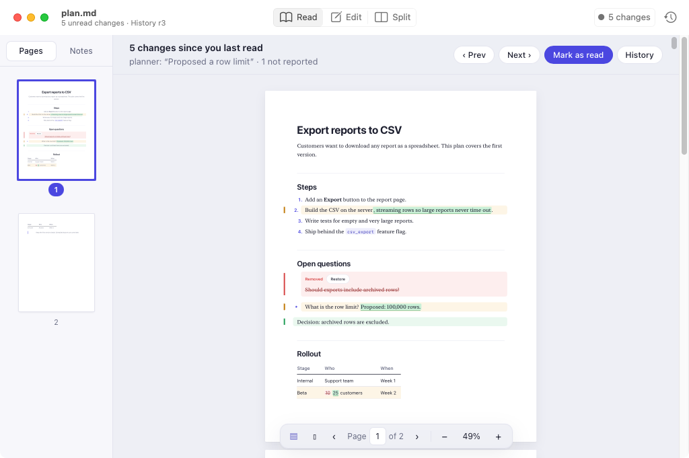
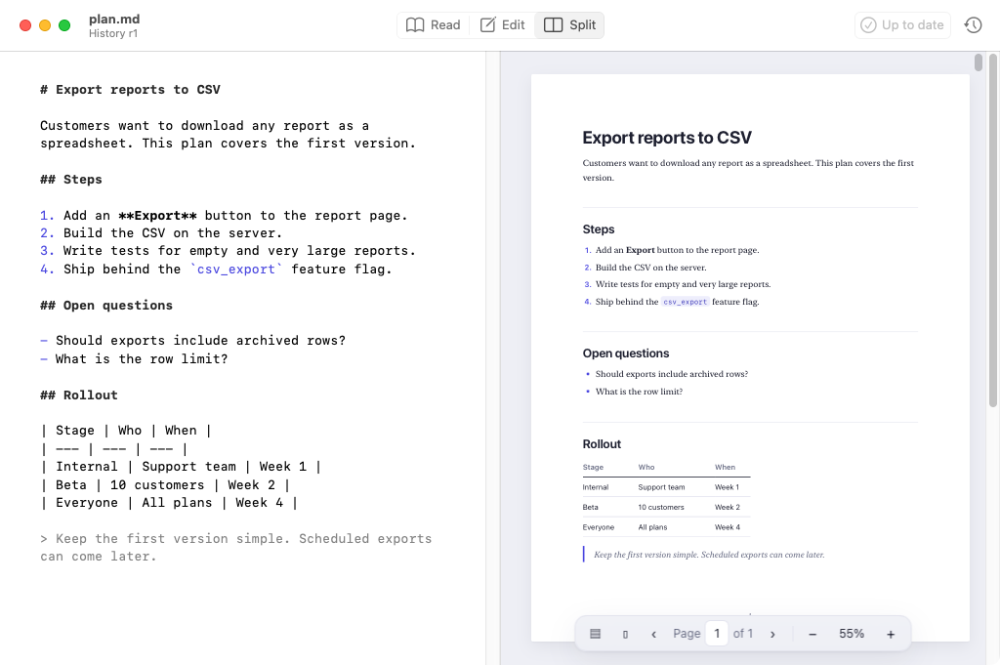

A familiar Mac reader.
A clearer document.
Real pages, numbered thumbnails, zoom, and a two-page view. Or switch to continuous scrolling. The Markdown underneath stays the same.
Read beautifully. Keep your notes close.
See exactly what changed while you were away.
Free & open source · v0.5.3 · macOS 14+ · Apple silicon & Intel
Not yet notarized. First-launch instructions · Change tracking needs the CLI.

Instead of reading the whole document again, see exactly what changed. Try this illustrative example: compare the original, review the update, then restore a removed question.
Make large reports easy to download.
Open question
Should exports include archived rows?
Decision: limit exports to 100,000 rows.
Interactive example, not a live session. Nothing is uploaded or saved.
Real pages, numbered thumbnails, zoom, and a two-page view. Or switch to continuous scrolling. The Markdown underneath stays the same.
Highlight in five colors. Add a note and tuck it away. When the text changes, annotations follow it—or wait for you to reattach them if the match is uncertain.
Read, Edit, and Split modes. No surprise reformatting or autosave over your file. Unchanged saves preserve the original bytes.
Edit your Markdown on the left. Check the result on the right. Your documents remain files you can open with other tools, without importing them into a private library.
Explore the app guide ↗
Each agent has its own “last looked” point. The CLI and MCP server return the changed blocks, with old and new text and reported authorship.
A planner, an implementer, and you can share one history without making a Git commit for every edit.
Set up the companion CLI ↘$ mdeditdiff changes plan.md --reader implementer 3 changes since r1, your last look. Reported by planner: “Added streaming and a row limit” ~ Implementation Build the CSV on the server{+, streaming rows+}. − Open questions Should exports include archived rows? + Decision Limit exports to 100,000 rows. Unchanged sections omitted.
Start with the app for reading, editing, pages, and notes. Install the companion CLI too for shared history, change review, and restore.
Unzip the download and drag mdEditDiff into Applications. Works on macOS 14 or later, on Apple silicon and Intel.
Download v0.5.3 ↓Requires Node.js 20 or later. Run this once in Terminal to install the CLI and MCP server.
npm install -g https://github.com/roy-vinay/applied-ai-agents/releases/download/mdeditdiff-v0.5.3/mdeditdiff-cli.tgzFor Claude Code, run the command below. Other MCP clients can use the configuration in the guide.
claude mcp add mdeditdiff -- mdeditdiff mcpmdEditDiff is actively developed. Here’s what’s in the current release—and what’s still ahead.
No promised release dates. Share a feature request ↗
The app, history, and personal annotations are stored locally. No account or telemetry is required. Documents do not need to be uploaded, and the preview does not automatically load remote images.
For reading, editing, pages, highlights, and notes, no. For change tracking, shared revision history, and restore in the Mac app, install the companion CLI. It also gives your agents access through commands or MCP.
No. mdEditDiff helps you read and review what people and agents write. It does not generate your text or require an AI subscription. Agent connections use the CLI or MCP.
No. Git remains your repository history. mdEditDiff keeps a separate local history and a last-look point for each reader, so you can inspect changes between commits. Authorship is self-reported, not verified.
Yes. They remain ordinary UTF-8 Markdown files. Notes and highlights live separately in the app’s local storage, so copying a Markdown file alone does not carry those annotations. The history currently follows file paths; renaming a file starts a new history.
Yes. The project is open source under the MIT license. Read the source, report an issue, or suggest a workflow that would make it more useful.
A little less catching up. A little more moving forward.